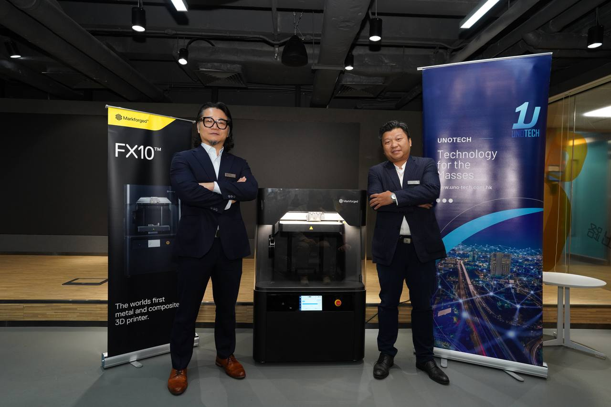
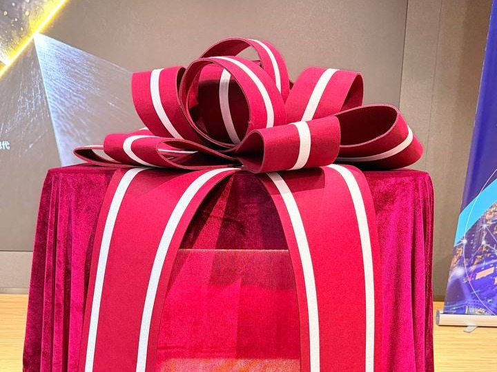
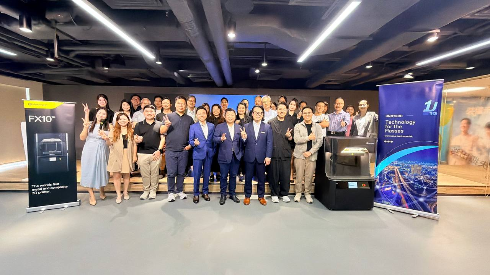
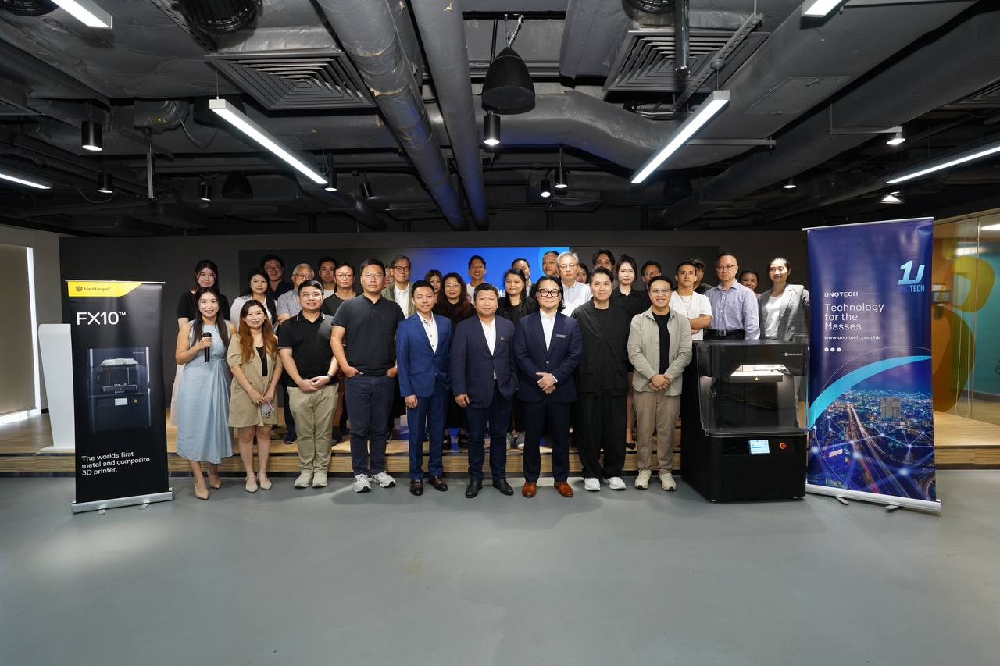

News & Insights

2026 年 9 月 24 日，Markforged 於香港生產力促進局（HKPC）Inno Network 舉行發布會，宣布委任壹科技有限公司（Unotech Limited）為香港獨家代理，由壹科技負責 Markforged 產品在香港的銷售、技術支援與應用開發。發布會由雙方管理層主持開幕及剪綵儀式，並設技術簡報、實機示範、用家案例分享與問答環節。
「AI 工具已經讓產品設計的迭代速度大幅提升，但如果硬體的打樣與生產跟不上，整體開發週期仍然卡在原地。」
陳中欣 ｜ Markforged 大中華區暨越南區總經理
連續纖維增強：用複合材料零件取代金屬加工件
現場公布的材料數據
發布會技術環節聚焦 Markforged 的連續纖維增強（Continuous Fiber Reinforcement，CFR）技術。它在列印過程中把連續的碳纖維、Kevlar 或高強度高溫玻璃纖維鋪放到零件內部，讓成品的強度與剛性接近金屬加工件，可以直接用在夾治具、機械手夾爪、產線輔具與功能性終端零件上。
會上引述的材料數據顯示，基礎材料 Onyx 配合連續碳纖維增強後，抗拉強度可達 800 MPa；作為對照，常用於結構件的鋁合金 6061-T6 為 308 MPa，一般 ABS 塑料約 30 MPa。現場並播放原廠拉力測試影片，一件連續纖維增強零件拉到 22,200 磅才斷裂 —— 約 10 公噸。
複合材料之外，Markforged 的金屬積層製造方案採用列印、清洗、燒結三階段流程：先以金屬粉與黏結劑製成的線材列印出生胚，用溶劑清洗去除第一階段黏結材料，再送進燒結爐完成緻密化。與使用鬆散金屬粉的金屬 3D 列印製程不同，這條流程全程不需要處理鬆散金屬粉。零件與支撐之間會自動列印一層陶瓷離型材料，燒結後呈粉狀，便於分離、也有助於控制收縮與尺寸精度；收縮率由雲端軟體依所選材料自動補償，不需要使用者自行放大模型或試誤。


現場實機示範：FX10 與 Eiger 雲端平台
上傳檔案就看得到時間、材料與成本
壹科技的系統工程師在會上示範 FX10 的實際操作，用 Onyx 材料當場列印兩件樣品 —— 一件加入連續碳纖維增強、一件不加，讓與會者直接比較。
同場演示 Eiger 雲端切片與列印管理平台：上傳 STL 檔後，平台會即時顯示零件尺寸、預估列印時間、成品重量、材料用量與成本，使用者可以調整層厚、填充密度與纖維鋪放位置，並逐層預覽切片結果。Eiger 另有離線版本，供未接入網路的生產環境使用。這一點在問答環節被追問到投資回報怎麼估算時再次被提出 —— 成本試算不必另外做表，上傳檔案時系統就算好了。
用家案例：香港理工大學的一體成型自行車座墊
從紡織結構出發，用連續碳纖維解決安全問題
發布會邀請香港理工大學時裝及紡織學院的研究團隊，分享以 Markforged 連續纖維技術開發自行車座墊的過程。該座墊於 2024 年獲德國紅點設計獎（Design Concept 組別）認可，並已取得發明專利。
構想源自紡織業的間隔織物（spacer fabric，俗稱三明治網布）結構 —— 這種夾層織物受壓時緩衝、放開後回彈，常見於運動鞋鞋面。團隊把這個概念轉化成座墊內部的 S 形緩衝結構，再以連續碳纖維提供支撐強度，讓整張座墊可以一體成型列印，不必像市售產品那樣組裝金屬支架與多種材料。座墊表面採 C 形孔洞設計改善透氣，成品重量約 190 餘公克。
驗證方面，團隊以碳纖維骨架外覆矽膠製作人工臀部模具，施加 250 公斤載荷重複下壓十次、每次停留十秒，座墊卸載後回復原狀；另由團隊成員進行真人長期實測，近兩年累計騎乘里程逾 1,500 公里，座墊未見破損。項目由該校五人團隊主導，跨院系與工業中心及 3D 列印研究設施（U3DP）合作完成。
團隊代表在會上指出，就自行車座墊而言，舒適度未必是第一優先，安全才是 —— 這正是選用連續碳纖維的原因：既提供支撐強度，也讓成品維持輕量。

為什麼是香港，為什麼是現在
把最不划算的那一段產能移回廠內
本地製造與工程單位近年同時面對交期壓縮、以及小批量多規格訂單比重上升兩項壓力，其中受影響最直接的是工裝 —— 夾具、治具、檢具與自動化夾爪。這類零件多為單件或極小批量，規格隨產品改版而變動，外發加工的交期通常以週計算。
積層製造的作用在於把這一段產能移回廠內：設計改完就重新列印，不必重新開模或排隊等外發加工；零件也可以用數位檔案形式保存，按需列印，取代實體備件庫存。對廠房面積有限、人力成本偏高、交期要求緊湊的香港製造環境，這個差異相對明顯。
壹科技表示已投入示範設備並完成人員訓練，重點行業鎖定航空維修、電子製造、醫療器材與精密工程。會上說明的導入方式是：客戶挑出交期最長、成本最高的零件，簽署保密協議後交由壹科技評估，把零件數位化並列印出實體件，直接上線驗證是否符合需求。
「壹科技選擇與 Markforged 合作，原因是他們在這個領域擁有其他廠商目前仍未能做到的獨有技術。我們已經投入示範設備並完成人員訓練，接下來會協助客戶把這項技術應用在生產線與研發上，以至開發新的業務。」
「AI 工具已經讓產品設計的迭代速度大幅提升，但如果硬體的打樣與生產跟不上，整體開發週期仍然卡在原地——CNC 外發加工以週計算，開模則以月計算，任何修改都要重來一次。我們在香港與壹科技合作，要補的正是這一段。」
關於 Markforged
Markforged 為工業級積層製造企業，成立於 2013 年，透過 Digital Forge 數位製造平台及連續纖維增強（CFR）技術，讓製造業在生產現場直接製造高強度終端零件、夾治具與備品，以縮短供應鏈、降低庫存並提升產能韌性。產品線涵蓋工業級複合材料及金屬積層製造系統，應用範圍包括航太、汽車、電子、醫療器材及精密工程。
關於壹科技有限公司
壹科技有限公司（Unotech Limited）為香港的工業技術方案供應商，引進智慧製造與 3D 列印技術，向本地科研、教育及製造機構提供設備供應、應用開發及技術支援服務。
傳媒查詢及索取高解析度圖片
電郵：dery.chen@uno-tech.com.hk
電話：5532 1843
網址：www.uno-tech.com.hk
資料來源
- 活動事實、技術說明與材料數據，取自 2026 年 9 月 24 日發布會現場全程錄音（1 小時 52 分）。
- 文中兩段具名直接引語（Ivan Siu、陳中欣）為現場發言的書面整理，非逐字轉錄；原始錄音存檔可查。
- 紅點設計獎（Design Concept 組別）得獎年份、專利狀態、測試方法與里程數據，由香港理工大學研究團隊於會上提出。
- 文中照片為 2026 年 9 月 24 日活動現場攝影。